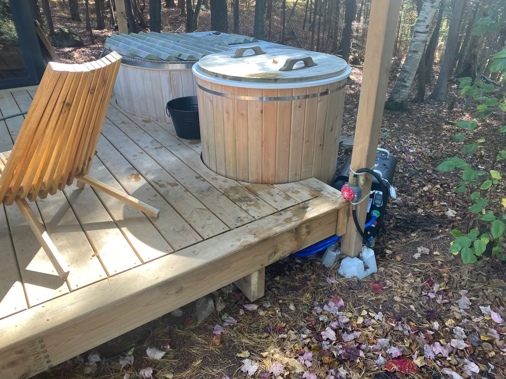
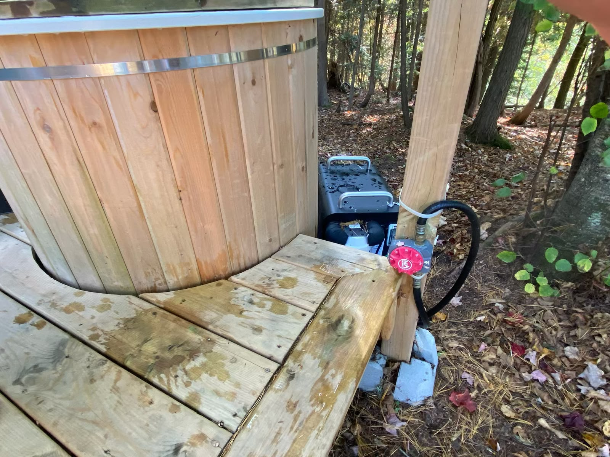
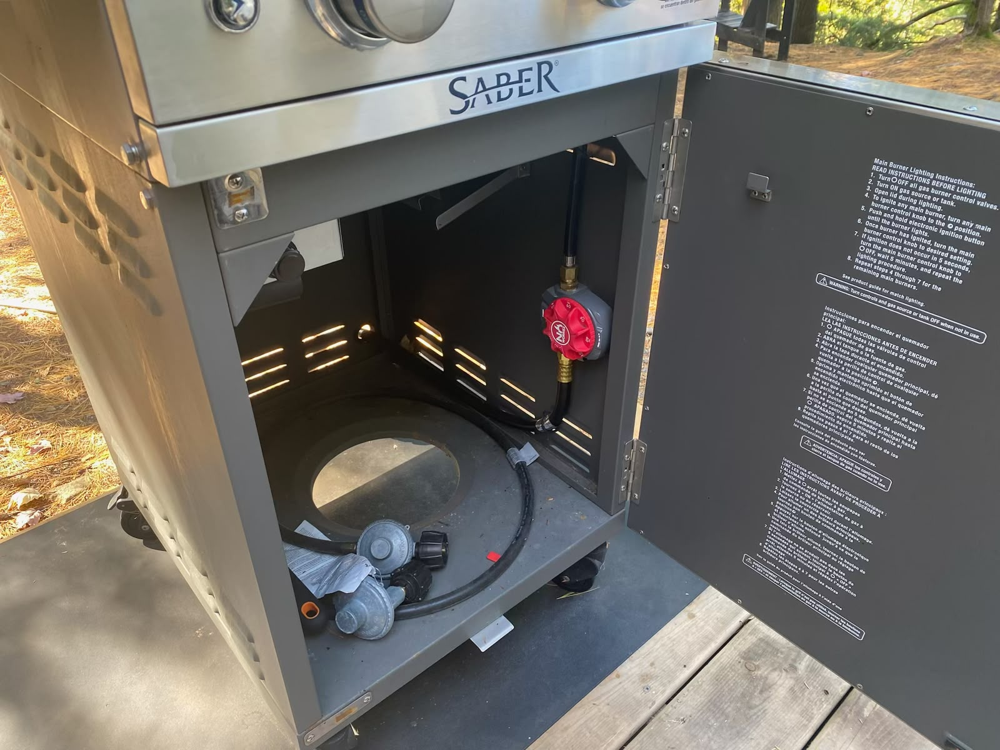
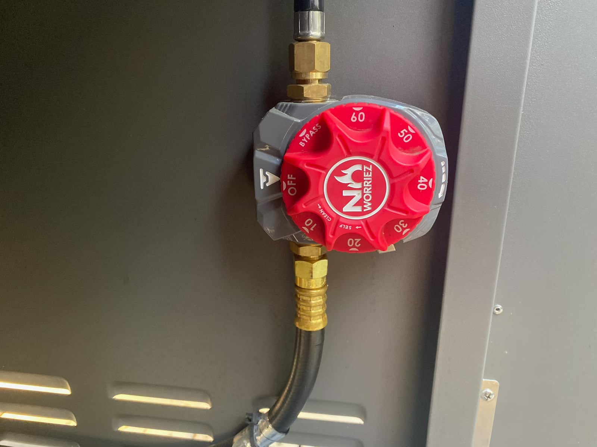

Outdoor Fireplace and BBQ
Both the outdoor fireplace and BBQ have propane timers that must be turned on before use. These timers control the propane supply and automatically shut it off when the selected time runs out.
Outdoor Fireplace
- Locate the propane timer mounted on the post beside the cold plunge.
- Turn the timer to your desired time (e.g. 20, 30, 40, or 60 minutes).
- Go back to the outdoor fireplace and light it as usual.


BBQ
- Locate the propane timer underneath the BBQ in the cabinet.
- Turn the timer to your desired time (e.g. 20, 30, 40, or 60 minutes).
- Go back to the BBQ and light it as usual.

